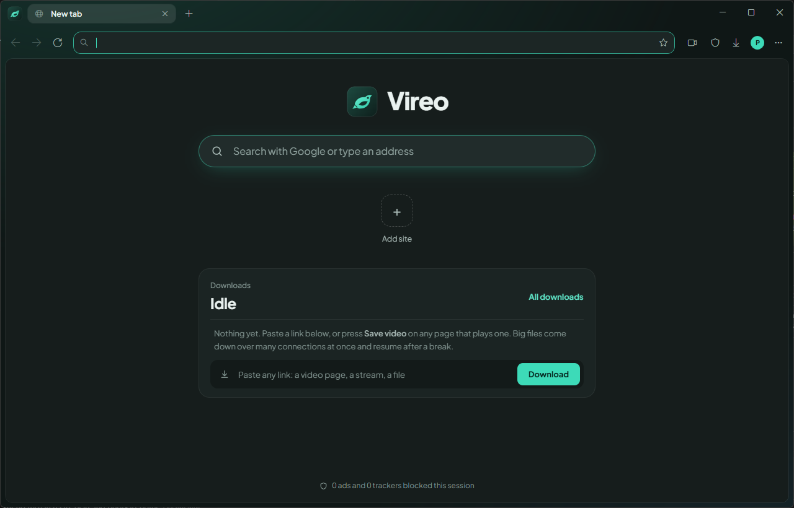
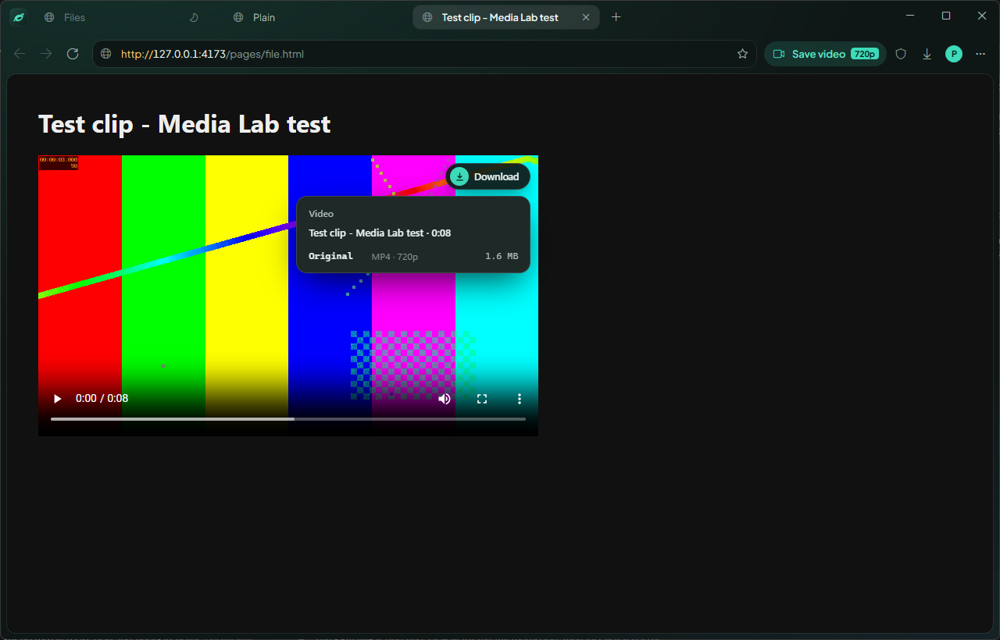
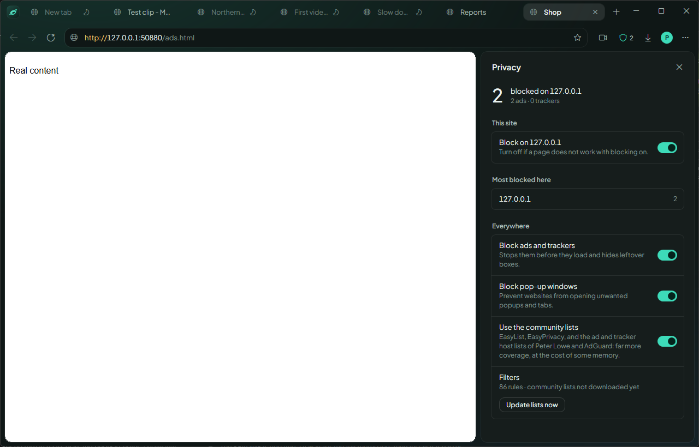

Clean pages
Ads and trackers are stopped before they load, with the same community lists the best blockers use. Pop-ups and surprise tabs never open.

Vireo is a fast, private browser for Windows. Ads, trackers and pop-ups never load, hidden tabs sleep, and the video a page plays is one click from being yours to watch offline.
Download for Windows What's new
Free and open source · Windows 10 and 11 · No administrator rights needed

Ads and trackers are stopped before they load, with the same community lists the best blockers use. Pop-ups and surprise tabs never open.
A Download button on every video and song, with every quality the site offers: files, HLS and DASH streams, even live streams. Protected content is respected.
Hidden tabs fall asleep and wake with their page, so a laptop with 4 GB stays as responsive as a desktop.
No accounts, no telemetry, nothing sent to us. Private windows leave nothing behind but the files you keep.

